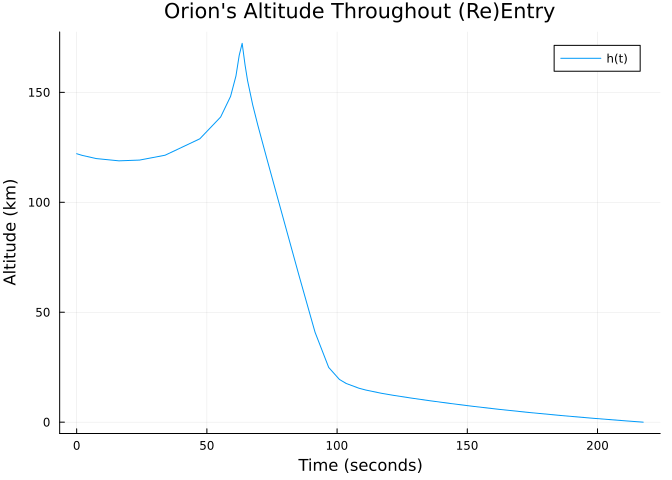

"""
Calculate the ballistic coefficient, β.
"""
β(m, Cᵣ, Aₛ) = m / (Cᵣ * Aₛ)
"""
Calculate the derivative of the downrange distance, ḋ.
"""
ḋ(ν, γ) = ν * cos(γ)
"""
Calculate the terminal velocity, vₜ.
"""
vₜ(g, β, ρ, γ) = √(-2g * β * sin(γ) / ρ)
"""
Calculate the maximum deceleration, nₘ.
"""
nₘ(vₑ, γ, hₛ, e) = (vₑ^2 / hₛ) * (sin(γ) / 2e)The content here was originally written as part of a problem set assigned in a graduate launch and entry vehicle design course at the University of Maryland. The problem statement was flawed. I believe this was deliberate — either way, the assignment was a brilliant educational tool. I’m thankful for that slight falsehood; it cemented my early understanding of spacecraft entry dynamics, and has motivated this whole post.
Artemis 1
Go Artemis! NASA’s first Artemis mission launched successfully in the earliest hours of November 16th, 2022. Artemis 1 was an uncrewed flight test — the Orion spacecraft flew to the moon, arrived in a special kind of stable orbit called a Distant Retrograde Orbit. Of course, NASA’s flight operators in Mission Control captured stunning pictures along the way. A visual overview for Artemis 1 is shown in Figure 1.
Artemis 1 is record breaking through its furthest achieved distance from Earth, and through one of its most important test objectives — the first successfully test of a skip-entry for a human-rated spacecraft. Orion’s heatshield was tested successfully when it entered Earth atmosphere on December 11th, 2022.

Atmospheric Entry
Testing a new spacecraft’s capability to safely enter Earth’s atmosphere is incredibly important. If a spacecraft is to return to Earth in-tact, it has to survive the fall through Earth’s atmosphere. Returning spacecraft are hurtling through space at tens of thousands of miles per hour; as the spacecraft collide with air particles at high speeds, an enormous amount of heat is generated. To withstand the heat of entering a planet’s atmosphere from space, spacecraft commonly have a thick metal component which is oriented towards the atmosphere for the duration of the atmospheric entry. This metal hardware is referred to as a heat shield. Artemis 2 will fly four astronauts to a lunar orbit before returning back to Earth. A successful atmospheric entry in Artemis 1 will prove the Orion spacecraft capable of safely returning astronauts back to Earth in Artemis 2, and future Artemis missions.
The angle of a spacecraft’s flight into Earth’s atmosphere (mostly) determines the kind of atmospheric entry: ballistic, lifting, or skipping. A steep entry will cause the spacecraft to cannonball through Earth’s atmosphere; if we model this scenario while ignoring the force of gravity on the spacecraft, the spacecraft’s trajectory is ballistic. A slightly less steep entry will allow the atmosphere to lift the spacecraft as it descends; this force exerted by the atmosphere on the spacecraft is similar to how airplanes fly, and this flavor of atmospheric entry is known as lifting entry. Finally, entering the atmosphere at a shallow angle will cause the spacecraft to skip across the atmosphere like a rock on a pond; this is known as a skipping entry.
No human-rated vehicle as ever completed a skip-entry before Artemis 1. Orion is the first! There are many benefits to skip-entries, including lower accelerations experienced by astronauts, more precise landing targets, and lower temperatures on the heat shield. While the benefits of skip-entries are real, all atmospheric entries are incredibly sensitive. Enter the atmosphere at too steep an angle, and the spacecraft will burn up in the atmosphere. Enter the atmosphere at too shallow an angle, and the spacecraft will skip too far and fly out into space, never to return. Rigorous calculations must be made to ensure the spacecraft is entering the atmosphere at the right angle, and the right speed. With a few simplifying assumptions, the math behind atmospheric entry can be simple enough to fit in a blog post! Don’t believe me? Read on!
Entry Dynamics
We can simulate the Orion spacecraft’s trajectory through the atmosphere with just a couple dozen lines of code! To build a semi-accurate model for how a spacecraft enters Earth’s atmosphere, we’ll need to simplify the problem by make some assumptions. For example, let’s completely ignore winds! We should also ignore parachutes — we will just assume parachutes deploy successfully at some altitude. Let’s pretend the Orion spacecraft is completely rigid by ignoring the possibility of any bending or flexing in the structure that could affect the aerodynamics throughout entry. Also, we are leaving out all considerations related to heat! No thermodynamic modeling in this post. We will assume the heat shield is capable of handling any entry we throw at it.
The word model might seem a bit abstract. What does a model look like? A model can be thought of as the combination of two things: simplifying assumptions, and equations which rely on the simplifying assumptions. So all we need to build a model is to list the assumptions we make, and use those assumptions to write equations. Hey! That’s only two things!
There are many other assumptions we’re making implicitly in this problem. While we can’t possibly list them all, let’s go into some more depth for a couple of the most important assumptions our model will rely on.
Exponential Atmosphere
Earth’s atmosphere will exert aerodynamic forces on the Orion spacecraft. If we ignore wind, these aerodynamic forces will depend on some aerodynamic coefficients, the spacecraft’s airspeed and orientation, as well as the density of the atmosphere. This atmospheric density will vary with altitude! We can create a very simple model for Earth’s atmosphere by assuming the density decays exponentially as altitude increases. The core equation for \(\rho\), the atmospheric density, will depend on altitude above sea level \(h\), the atmospheric density at sea level \(\rho_0\), and a scaling factor \(h_s\) which is unique to each planet. For Earth, an accurate scaling factoris approximately equal to \(7524\) meters.
\[ \rho = \rho_0 e^\frac{-h}{h_s} \tag{1}\]
Aerodynamic Coefficients
The aerodynamic forces on Orion can be summarized by a few aerodynamic coefficients: the ballistic coefficient \(\beta\), the coefficient of drag \(C_D\), and the lifting coefficient \(C_L\). The coefficients of lift and drag are commonly combined into one value: the lift to drag ratio \(C_R\). For this post, one value for Orion’s \(C_R\) will be assumed. The ballistic coefficient can be calculated using the vehicle’s mass, lift to drag ratio, and the surface area of the heat shield, as shown in Equation 3.
\[ C_R = \frac{C_L}{C_D} \tag{2}\]
\[ \beta = \frac{m}{C_R A_s} \tag{3}\]
Code which calculates the ballistic coefficient, and other calculations relevant to atmospheric entry dynamics, is provided below.
Equations of Motion
With all of the assumptions described above, we can write the equations of motion for a spacecraft as it flies through a planet’s atmosphere. The equations shown through math and code below describe how four specific values change with time as the spacecraft flies: the angle of the spacecraft’s velocity with respect to the spacecraft’s horizontal axis \(\gamma\), the airspeed \(v\), the distance to Earth’s center \(r\), and the angle of the spacecraft’s position with respect to the horizontal along the Earth’s center \(\theta\). Please accept these equations as “given” for now. Check back later and there might be an expanded explanation posted as an update!
\[ \begin{align} \dot{\gamma} &= \frac{1}{v} \left( L_m - (1 - \frac{v^2}{v_c^2}) g \cos{\gamma} \right) \\ \dot{v} &= -D_m - g \sin{\gamma} \\ \dot{r} &= v \sin{\gamma} \\ \dot{\theta} &= \frac{v}{r} \cos{\gamma} \\ \end{align} \tag{4}\]
The code below defines a function, CanonicalEntry, which produces the equations of motion for a spacecraft’s atmospheric entry along a plane in code.
using Memoize: @memoize
using Symbolics, ModelingToolkit
using PhysicalConstants.CODATA2018: NewtonianConstantOfGravitation as G₀
"""
Construct a model for entry dynamics.
"""
@memoize function CanonicalEntry(; name = :CanonicalEntry, simplify = true, structural_simplify = true)
@variables t
x = @variables γ(t) v(t) r(t) θ(t)
p = @parameters r₀ ρ₀ hₛ β Cᵣ μ
δ = Differential(t)
vc = √(μ / r)
g₀ = μ / r₀^2
g = g₀ * (r₀ / r)^2
h = r - r₀
ρ = ρ₀ * exp(-h / hₛ)
Dₘ = (ρ / 2) * v^2 / β
Lₘ = Cᵣ / Dₘ
eqs = [
δ(γ) ~ (1/v) * (Lₘ - (1 - (v/vc)^2) * g * cos(γ)),
δ(v) ~ -Dₘ - g * sin(γ),
δ(r) ~ v * sin(γ),
δ(θ) ~ (v / r) * cos(γ)
]
if simplify
map!(ModelingToolkit.simplify, eqs, eqs)
end
model = ODESystem(
eqs, t; name = name,
)
if structural_simplify
model = ModelingToolkit.structural_simplify(model)
end
return model
endCalling CanonicalEntry produces a model object, which we can inspect for the equations of motion written mathematically. This expands all of the equations; the output looks a lot more complicated than Equation 4! Thank goodness for computers.
model = CanonicalEntry()
model |> equations .|> ModelingToolkit.simplify\[\begin{align} \frac{\mathrm{d} \gamma\left( t \right)}{\mathrm{d}t} =& \frac{2 r_0^{2} C_r \beta - \left( v\left( t \right) \right)^{2} \left( \frac{r_0}{r\left( t \right)} \right)^{2} \mu \rho_0 e^{\frac{r_0 - r\left( t \right)}{h_s}} \cos\left( \gamma\left( t \right) \right) + \left( v\left( t \right) \right)^{2} \left( \frac{v\left( t \right)}{\sqrt{\frac{\mu}{r\left( t \right)}}} \right)^{2} \left( \frac{r_0}{r\left( t \right)} \right)^{2} \mu \rho_0 e^{\frac{r_0 - r\left( t \right)}{h_s}} \cos\left( \gamma\left( t \right) \right)}{\left( v\left( t \right) \right)^{3} r_0^{2} \rho_0 e^{\frac{r_0 - r\left( t \right)}{h_s}}} \\ \frac{\mathrm{d} v\left( t \right)}{\mathrm{d}t} =& \frac{ - \frac{1}{2} \left( v\left( t \right) \right)^{2} r_0^{2} \rho_0 e^{\frac{r_0 - r\left( t \right)}{h_s}} - \left( \frac{r_0}{r\left( t \right)} \right)^{2} \beta \mu \sin\left( \gamma\left( t \right) \right)}{r_0^{2} \beta} \\ \frac{\mathrm{d} r\left( t \right)}{\mathrm{d}t} =& v\left( t \right) \sin\left( \gamma\left( t \right) \right) \\ \frac{\mathrm{d} \theta\left( t \right)}{\mathrm{d}t} =& \frac{v\left( t \right) \cos\left( \gamma\left( t \right) \right)}{r\left( t \right)} \end{align}\]
Simulated Skip-Entry
Backstory
In 2020, I took a graduate Launch & Entry Vehicle Design course at the University of Maryland. The course was taught by Dr. Akin, and one of our homework assignments was to simulate a lifting entry for the Orion spacecraft. One of my classmates and I easily spent 20+ hours trying to make the simulation work, but no matter what we tried, the simulated entry did not seem to be a lifting entry. We turned in the assignment the day it was due, and hoped for grading mercy — which we received, thankfully! Dr. Akin apologized when we turned it in — he had said lifting entry, but really the initial conditions he gave us instead produced a skip entry! I forgot all about this for months, until I reviewed recorded lecture videos from a previous year of the course while preparing for an exam. I came across a lecture from years earlier, where my professor gave the same apology to that class!
I don’t mean to make any accusations, but I suspect that mix-up was intentional! Regardless of the intent, the effect was brilliant. I’ve never forgotten those couple of lectures introducing atmospheric entry. Plus, the assignment motivated a fun blog post!
Initial Conditions
To simulate Orion’s skip-entry, we need initial conditions. Let’s assume the initial conditions provided in Table 1. We can “plug” these conditions into the dynamics described previously to simulate an atmospheric skipping entry!
| Symbol | Description | Value | Units |
|---|---|---|---|
| \(m\) | Orion Mass | \(10,400\) | kilograms |
| \(A_s\) | Heatshield Surface Area | \(19.635\) | square meters |
| \(C_R\) | Lift to Drag Ratio | \(0.25\) | meter squared per quartic second |
| \(\beta\) | Ballistic Coefficient | \(441.39\) | kilograms per meter squared |
| \(\rho_0\) | Atmospheric Density at Sea Level | \(1.226\) | kilograms per meter cubed |
| \(h_s\) | Atmospheric Scaling Factor | \(7524\) | meters |
| \(\mu\) | Earth’s Mass Parameter | \(3.986 \times 10^14\) | meters per second cubed |
| \(r_0\) | Earth’s Radius | \(6378\) | kilometers |
| \(\gamma\) | Entry Flight Path Angle | \(-2.5^\circ\) | degrees |
| \(v\) | Entry Velocity | \(8.939\) | kilometers per second |
| \(r\) | Entry Radius | \(6500.1\) | kilometers |
| \(\theta\) | Entry Angular Position | \(349.3^\circ\) | degrees |
Simulation
Finally — let’s simulate Orion’s entry into Earth’s atmosphere, and plot the spacecraft altitude across time. Do you see the altitude jump before Orion finally descends to the Earth’s surface? That’s the spacecraft skipping across the atmosphere — just like a rock skips across a pond, if the rock was moving at tens of thousands of miles per hour.
This is a really fun exercise. By breaking the problem down to first-principles, we can predict the behavior of a really complicated system. Thanks to Dr. Akin for assigning this problem over two years ago, and thanks to my friend and classmate Kate for banging her head against the wall with me to figure this out. Finally, thanks to you for reading!
using Plots
using Unitful
using DifferentialEquations
let time = NaN # the time does not matter!
f = ODEFunction(model)
m = 10.4e3u"kg"
A = 19.635u"m^2"
C = 0.25u"m^2/s^4"
β = 441.39u"kg/m^2"
ρ = 1.226u"kg/m^3"
h = 7524.0u"m"
μ = 3.986e14u"m^3/s^2"
R = 6378u"km"
γ = -2.5u"°"
v = 8.939u"km/s"
r = 6500.1u"km"
θ = 349.3u"°"
states = [
γ, v, r, θ,
] .|> upreferred .|> ustrip
parameters = [
C, R, h, μ, ρ, β
] .|> upreferred .|> ustrip
sealevel(u,t,integrator) = u[3] - ustrip(upreferred(R))
impact = ContinuousCallback(sealevel, terminate!)
problem = ODEProblem(
model, states, (0.0, 500.0), parameters,
)
trajectory = solve(problem; callback = impact, abstol = reltol = 1e-12)
altitude = map(
u -> ustrip(u"km", u[3] * u"m" - R),
trajectory.u,
)
plot(
trajectory.t, altitude;
title = "Orion's Altitude Throughout (Re)Entry",
label = "h(t)",
xlabel = "Time (seconds)",
ylabel = "Altitude (km)",
)
end